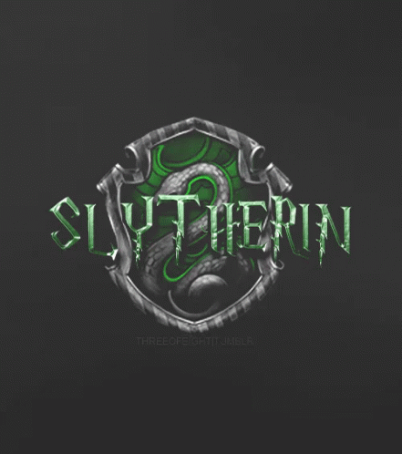

Slytherin was one of the four Houses at Hogwarts School of Witchcraft and Wizardry,
founded by Salazar Slytherin.In establishing the house, Salazar instructed the Sorting Hat to pick students who had a few particular characteristics he most valued.Those characteristics included cunning, resourcefulness, leadership, and ambition.
Many Slytherin students tended to clique together, often acquiring leaders,
which further exemplified Slytherin's ambitious qualities. Examples of these included Draco Malfoy's gang, Merula Snyde's gang, Pansy Parkinson's gang and the Death Eaters.
The founder highly valued and favoured pure-blood students and the Sorting Hat admitted that it could be a factor when being sorted.[1][17] Students of any blood status could be placed in the house. However, a Muggle-born student from that house was considered to be quite rare.